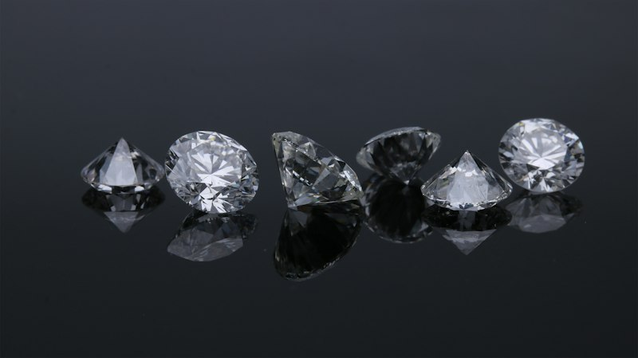
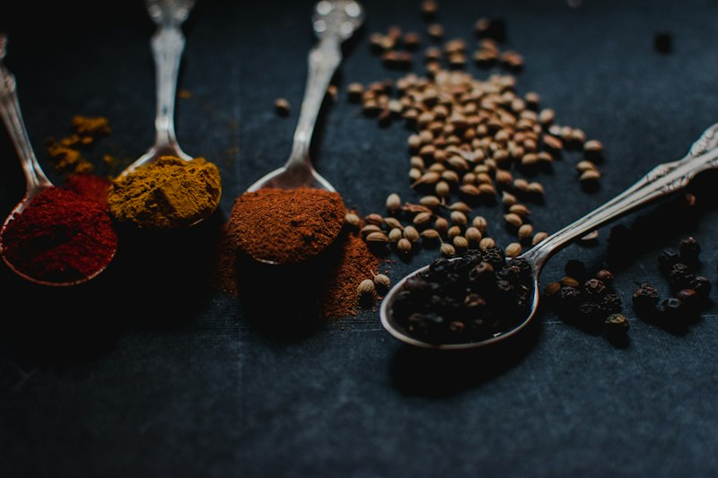
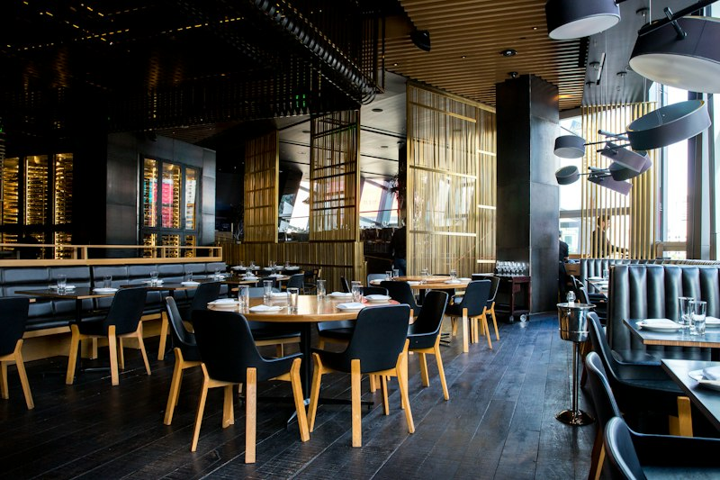

Indus Valley: The Proto-Curry
Archaeological chemical residue analysis from terracotta cooking pots excavated at the Harappan site of Farmana (Haryana) revealed traces of starch grains belonging to turmeric, ginger, and garlic. Inhabitants of Mohenjo-Daro and Harappa cooked with sesame oil, cow and buffalo milk, barley, and lentils in large earthenware cauldrons—proving that the foundational tri-blend of Indian cooking is at least 4,500 years old.

Vedic Rituals & Ayurvedic Science
The Vedic era consecrated food as medicine and divine offering (Brahmarpanam). The classical medical treatises Charaka Samhita and Sushruta Samhita formalized the science of nutrition: establishing the six primary tastes (Shadrasa: sweet, sour, salty, pungent, bitter, astringent) and classifying ingredients by their thermal effect (Ushna vs. Sheeta) and their impact on body constitutions (Vata, Pitta, Kapha).
The Maritime Spice Route & Imperial Trade
The Malabar Coast of Kerala became the epicenter of ancient international commerce. Through the bustling port of Muziris, Indian merchants traded Malabar black pepper (“Black Gold”), green cardamom, cinnamon, and fine silks with the Roman Empire, Egypt, and Mesopotamia in exchange for gold, silver, and Mediterranean wine. Pliny the Elder famously recorded that Indian spices drained over 50 million Roman sesterces annually from the Roman treasury.

The Mughal Courts & Imperial Feasts
The arrival of the Mughal Empire inaugurated an era of unprecedented culinary refinement. Court kitchens (Bawarchikhana) blended Persian aromatics—saffron, rosewater, almonds, pistachios, and dried fruits—with indigenous spices to birth Dum Pukht (slow-sealed steam cooking), fragrant Biryanis, rich Kormas, and layered flaky breads. In Awadh (Lucknow), royal cooks perfected melt-in-the-mouth Galouti and Kakori kebabs seasoned with over 160 secret botanical aromatics.

The Columbian Exchange & New World Plants
When Portuguese explorer Vasco da Gama reached Kozhikode (Calicut) in 1498, it initiated the Columbian Exchange that radically transformed Indian dining. Flora from the Americas was introduced: chilli peppers (which gradually joined black pepper for heat), potatoes (aloo), tomatoes, cashews, pineapples, and papayas. Later, during the British colonial period, extensive tea plantations were established in Assam and Darjeeling, leading to India’s world-famous Masala Chai culture.
The Tandoori Revolution & Modern Gastronomy
Following the 1947 Partition, Punjabi migrants in Delhi introduced the clay tandoor into commercial urban dining, creating iconic global benchmarks such as Tandoori Chicken, Butter Chicken, and Dal Makhani. Today, Indian gastronomy celebrates both its ancient hyper-local regional roots and avant-garde modern interpretations in the world’s finest Michelin-starred kitchens.
